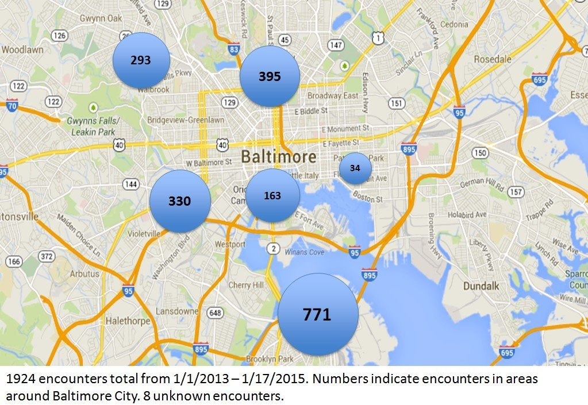

Welcome to the Online Tutorial!
Thank you for your time and willingness to participate.
Human Trafficking
There are 20.9 million human trafficking victims around the world - and this number is surely increasing.
The International Labor Organization believes that there are about 4.5 million people who are trapped in forced sexual exploitation worldwide. This is enough to fill M&T Stadium over 65 times.

Only 0.4% of these human trafficking victims have been identified globally.
Sex Trafficking
Since 2007, the National Human Trafficking Resource Hotline, has received reports of 14,588 sex trafficking cases in the U.S. alone, although, due to unreported cases, this is considered an undercount. Of course, there are thousands of cases that have not been reported.
Between 2002 and 2011, approximately 750,000 women and children have been trafficked within the U.S.
Human trafficking generates an annual revenue of $150 billion in the U.S., $99 billion of which comes from commercial sexual exploitation.
In Maryland
Maryland is a hub of human trafficking, because of its convenient access and prevalence of interstate highways, bus terminals, truck stops, and airports.
Sex trafficking occurs here in Baltimore, as well. These numbers represent the number of encounters local nonprofit Safe House of Hope has had with prostitutes. Not all prostitutes are victims of sex trafficking, but the organization serves dozens of victims of sex trafficking in Baltimore every week.
Child Trafficking
The average age of entry of American minors into the sex trade is often as young as 12-14 years old.
The National Center for Missing & Exploited Children found that about 20% of internet pornography involves children that are victims of human trafficking.
$32 Billion
$97 Billion
1/10th
80 Billion
Demand-Driven Industry
“The explicit connection to sex trafficking is that increased use of pornography leads to increased demand for prostitution.”
- Dr. Mary Anne Layden
WHISPER Oral History Project
Researchers in the WHISPER Oral History Project interviewed female survivors of prostitution* and found that 52% of interviewees were shown pornography as part of their training for prostitution. 80% responded that customers used pornography to show them what sexual activities they wanted to buy.
Prostitution and Trafficking in Nine Countries
In a study that interviewed over 800 former prostitutes in nine countries, 47% of respondents were “upset” by incidents in which buyers tried to get them to perform things the buyers had seen done in pornography.
Click on text to learn more about each study...
“In my mind, pornography is a lot more harmful than even prostitution, because you take a picture or video of someone, they are forever exploited at the age and time that they are, so you can take a girl off the streets, and the exploitation stops, but their photos and videos are out there forever.”
- Jessica Richardson, trafficking survivor
“Pornography is advertising for trafficking, not just in general but also in the sense that traffickers and pimps use pornographic images of victims as specific advertising for their 'products.'”
- Dr. Catherine MacKinnon

Coercion
“The MindGeek hydra exerts so much force that people in the online-porn industry are scared to talk about it for fear of blacklisting.”
- David Auerbach, “Vampire Porn”
“Every major studio and star is now partnered with MindGeek or has worked for a studio that MindGeek purchased.”
- Colin Allerton of Adult Empire, quoted in Slate
Click on each bullet point to learn more
As explained by Vanessa Marin, ethical pornographers...
-
Treat actors with respect
-
Show real sex and real pleasure
-
Emphasize diversity